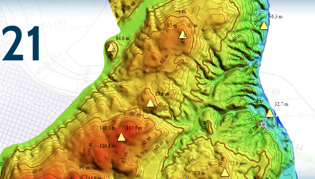
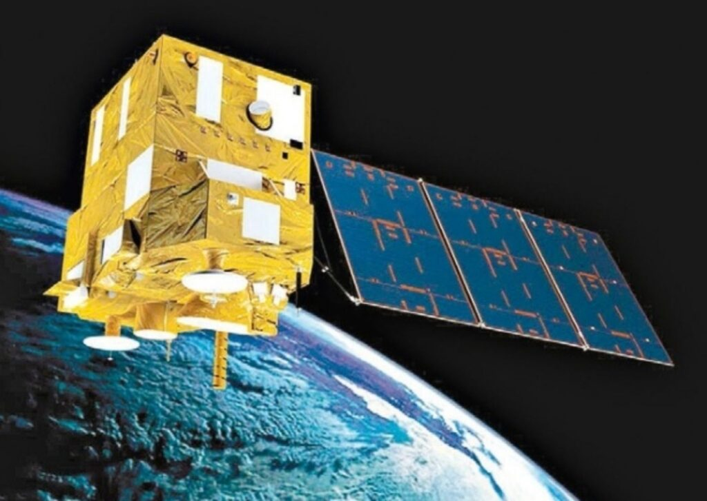

Em síntese, trata-se das tecnologias que servem para coleta e análise de dados referentes à toda informação espacial. Por se tratar da análise e processamento via informática desses dados, o Geoprocessamento é também conhecido como Geomática.
O que é o geoprocessamento , e qual a sua importância na sociedade?
Por meio de técnicas de análise detalhada desses dados, pode-se estudar características sociodemográficas, geográficas e topográficas de vastas regiões.
as aplicações das tecnologias em Geoprocessamento ramificaram-se para várias áreas do conhecimento, não só na Geografia, mas também na História, na Engenharia, na Arquitetura entre outros, atendendo as mais variadas necessidades de nossa sociedade, como exemplo, o desenvolvimento de bases cartográficas, a análise de recursos naturais, a implantação de redes de infra-estrutura (abastecimento de água, esgoto, drenagem, etc), os estudos em planejamento urbano-ambiental, os mapeamentos em segurança-pública e até nas atividades militares.
Aplicações :
Na área ambiental, por exemplo o geoprocessamento é uma das ferramentas mais utilizadas para monitoramento, por exemplo, da cobertura vegetal e uso das terras, níveis de erosão do solo, poluição da água e do ar, disposição irregular de resíduos, e assim por adiante.

Como forte aplicação do geoprocessamento e da cartografia temos os Sistemas de Informações Geográficas (SIGs), que examina relações espaciais, padrões e tendências geográficas. Os SIGs são responsáveis pelas previsões do tempo, relatório de quedas de energia e comandam milhões de decisões do mundo, com seus vários aplicativos, como em planejamentos municipais, estaduais e federais, proteção ambiental, redes de utilidade pública, etc. Há uma produção de mapas, em que muitas vezes, podendo ser diferenciados por cores, revela a diferença de relevo por exemplo .

Temos também o CBERS, um satélite sino brasileiro resultante de uma parceria entre o Brasil e a China. É um sistema de alta tecnologia, que tem como objetivo os recursos terrestres, muito utilizado para monitorar queimadas e desmatamentos na Amazônia.
O que é cartografia ?
A cartografia é definida como a ciência que se ocupa da elaboração de mapas de toda espécie. Abrange todas as fases dos trabalhos, desde os primeiros levantamentos até a impressão final dos mapas. É a atividade de se apresentar como uma série de estudos e operações científicas, técnicas e artísticas a partir dos resultados da observação direta ou da análise de documentos, voltados para mapas, planos cartesianos e outras formas de descrição detalhada. Representação de objetos, elementos, fenômenos e ambientes físicos e socioeconômicos e seu uso.
Relação entre a cartografia e o geoprocessamento :
A principal razão para a forte relação interdisciplinar entre cartografia e geoprocessamento é geoespacial. A cartografia envolve a apresentação de modelos de representação de dados para processos que ocorrem no espaço geográfico, em que os satélites, principalmente, disponibilizam imagens espaciais necessárias para a produção de mapas e representações cartográficas no geral.